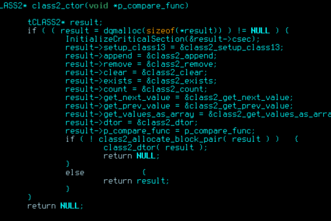

Le Monde Informatique |
||||
langage c
En 1983, l'Institut national américain de normalisation (ANSI) a formé un comité de normalisation (X3J11) du langage qui a abouti en 1989 à la norme dite ANSI C ou C89 (formellement ANSI X3.159-1989). En 1990, cette norme a également été adoptée par l'Organisation internationale de normalisation (C90, C ISO, formellement ISO/CEI 9899:1990). ANSI C est une évolution du C K&R qui reste extrêmement compatible. Elle reprend quelques idées de C++, notamment la notion de prototype et les qualificateurs de type2. Entre 1994 et 1996, le groupe de travail de l'ISO (ISO/CEI JTC1/SC22/WG14) a publié deux correctifs et un amendement à C90 : ISO/CEI 9899/COR1:1994 Technical Corrigendum 1, ISO/CEI 9899/AMD1:1995 Intégrité de C et ISO/CEI 9899/COR1:1996 Technical Corrigendum 2. Ces changements assez modestes sont parfois appelés C89 avec amendement 1, ou C94 / C953,4. Trois fichiers d'entêtes ont été ajoutés, dont deux concernant les caractères larges et un autre définissant un certain nombre de macros en rapport avec la norme de caractères ISO 646. En 1999, une nouvelle évolution du langage est normalisée par l'ISO : C99 (formellement ISO/CEI 9899:1999). Les nouveautés portent notamment sur les tableaux de taille variable, les pointeurs restreints, les nombres complexes, les littéraux composés, les déclarations mélangées avec les instructions, les fonctions inline, le support avancé des nombres flottants, et la syntaxe de commentaire de C++. La bibliothèque standard du C99 a été enrichie de six fichiers d'en-tête depuis la précédente norme. En 2011, l'ISO ratifie une nouvelle version du standard5 : C11, formellement ISO/CEI 9899:2011. Cette évolution introduit notamment le support de la programmation multi-thread, les expressions à type générique, et un meilleur support d'Unicode.  |
||||
|
||||